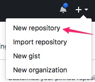
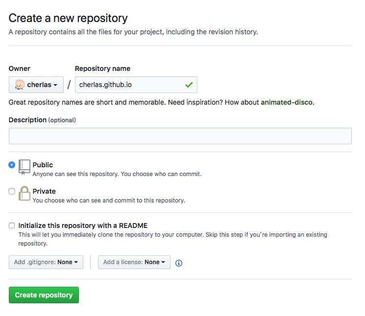
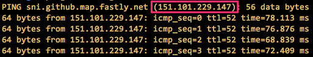
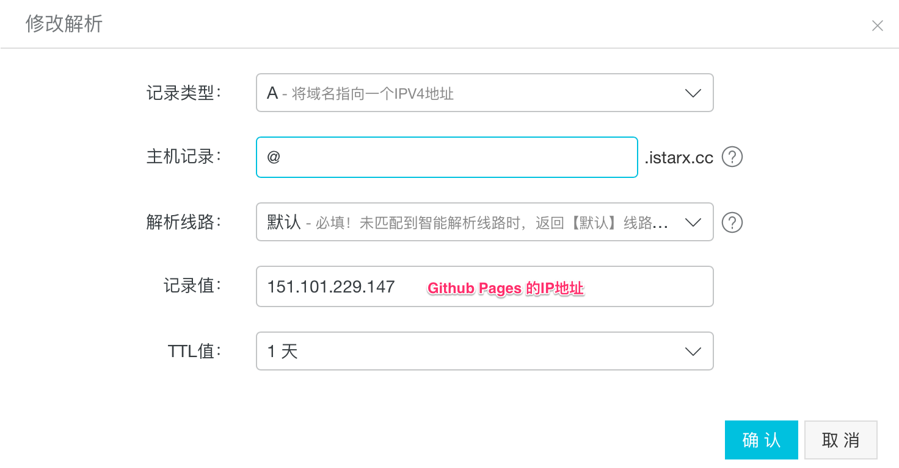
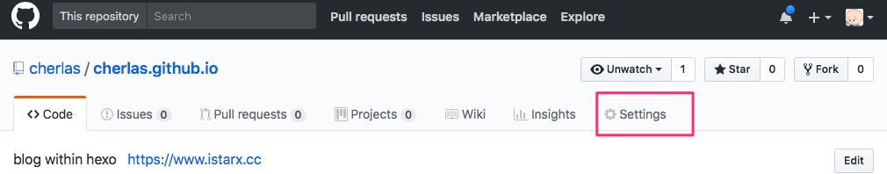
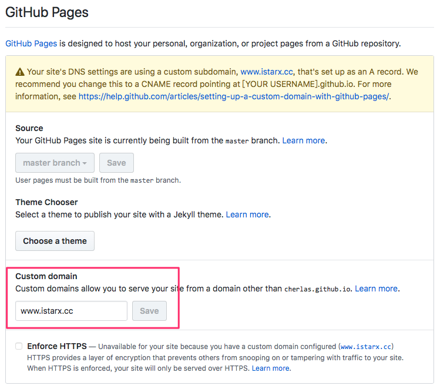

本文主要是在Mac(Mac OS High Sierra)环境下从零开始搭建自己的博客，利用靓丽的主题生成漂亮的博客，博文部署到Github上，并实现使用自定义域名访问博客。
折腾了很长时间，阅读了很多资料，也从零开始学习了 html + css, 了解了下 JavaScript 和 jQuery , 终于搭建起了自己的博客。很早之前就想有一个自己的博客，因为各种原因一直拖着(其实是懒…)，算是一个突破吧。顺带留个笔记或者教程。
本博客主要是针对Mac(Mac OS High Sierra)的，之前也有在Windows上搭建过，至于体验么…马上要变成Windows 黑了。目前博客部署在GitHub上，Hexo版本为目前(2018.01.04)的最新版本 3.4.3, hexo版本不一致，配置也或多或少有些区别。关于主题，后续专门会有一博客记录如何从零开始制作自己的hexo主题。
Hexo 是一个快速、简洁且高效的博客框架。Hexo 使用 Markdown（或其他渲染引擎）解析文章，在几秒内，即可利用靓丽的主题生成静态网页。
安装
安装Node.js
Node.js主要是用来生成静态网页的，有以下几种安装方法，选择自己喜欢的即可：
-
到 Node.js 官网 下载版本一路安装即可；
-
如果安装了HomeBrew，则直接可以使用
brew install nodejs安装最新版本，或者使用brew install node@8安装8.x.x版本； -
nvm(官网推荐)
nvm安装可以使用cURL：
wget -qO- https://raw.github.com/creationix/nvm/master/install.sh | sh
或者Wget
wget -qO- https://raw.github.com/creationix/nvm/master/install.sh | sh
安装完成之后，重启终端并执行下列命令即可安装 Node.js。
nvm install stable
安装Git和申请Github账号
git主要是用来把生产的静态网页上传到git库上，OS X或者自带git，可以跳过这一步，如果需要安装则可以使用以下方法之一：
- Git 官方下载安装包，直接安装即可；
- 同样的，如果安装有HomeBrew, 则可以使用
brew install git进行安装；
之后到 github 官网上输入username、email以及password，按照提示验证邮箱即可创建github账号。
创建git pages仓库
创建好git账户之后，点击右上角的 + —> New repositpy，如下图：

之后你会看到以下界面：

输入Repository name，Description可填可不填。
Repository name 的命名格式是固定的，为name.github.io，name是你的github账号名称，比如我的账号名称是cherlas，则Repository name为：cherlas.github.io
之后你就可以通过name.github.io访问你的Github Pages了。
安装Hexo
当你安装完node以及git，则可以直接通过npm命令安装hexo
npm install -g hexo-cli |
Hexo目录结构
. |
Hexo 相关命令
init
hexo init [folder] |
该命令的作用是新建一个网站，网站所在的文件夹名字为folder，该命令会安装hexo所需要的一些依赖以及从git上clone landscape 主题。
hexo 3.4.3默认安装的依赖有：
"dependencies": { |
如需安装需要的依赖，则使用命令npm install <module-name> --save安装即可。
new
hexo new [layout] <title> |
新建一篇文章，layout参数可以特殊指定，如需修改默认layout，则修改 _config.yml配置文件中的default_layout参数。如果标题包含空格的话，请使用引号括起来。
generate
hexo generate |
把博文按照设置的主题形式生成静态网页，生成的结果在public目录下。该命令可以简写成hexo g。
generate命令可以跟如下参数：
| 选项 | 描述 |
|---|---|
-d, --deploy |
文件生成后立即部署网站 |
-w, --watch |
监视文件变动 |
--debug |
调试模式 |
publish
hexo publish [layout] <filename> |
发布草稿。
server
hexo server |
启动hexo服务器，默认情况下，访问网址为： http://localhost:4000/。该命令可以简写成hexo s。
server命令可以跟如下参数：
| 选项 | 描述 |
|---|---|
-p, --port |
文件生成后立即部署网站 |
-s, --static |
监视文件变动 |
-l, --log |
启动日记记录，使用覆盖记录格式 |
--debug |
调试模式 |
deploy
hexo deploy |
根据配置文件中deploy参数部署网站，可以简写成hexo d。
deploy命令可以跟如下参数：
| 选项 | 描述 |
|---|---|
-g, --generate |
部署之前预先生成静态文件 |
--debug |
调试模式 |
render
hexo render <file1> [file2] ... |
渲染文件。
render命令可以跟如下参数：
| 选项 | 描述 |
|---|---|
-o, --output |
设置输出路径 |
clean
hexo clean |
清除缓存文件 (db.json) 和已生成的静态文件 (public)。
在某些情况（尤其是更换主题后），如果发现您对站点的更改无论如何也不生效，您可能需要运行该命令。
list
hexo list <type> |
列出网站资料。type可以为：page，post， route， tag， category。
version
hexo version |
显示 Hexo 版本。
Hexo部署到Github
hexo命令中提到了hexo deploy或者hexo d命令可以把静态网页部署到网站上，至于部署到那些网站或者分支，需要通过_config.yml中的deploy参数设置。一个正确的部署至少有type参数。
你可以添加一个或多个deployer，Hexo 会依照顺序执行每个 deployer。
eg：如果要部署到github，则在部署之前你需要在终端执行
npm install hexo-deployer-git --save |
来安装git部署的相关依赖，之后在修改deploy参数：
deploy: |
之后就可以使用hexo deploy或者hexo d命令部署网站了。
自定义域名
静态网站部署到Github Pages上之后除了可以使用yourname.github.io访问之外，还可以使用自定义域名访问网站。
-
在终端执行
ping yourname.github.io得到Github Pages仓库对于的IP地址。
-
申请自己的域名。阿里云、腾讯云等等都可以申请的到，以阿里云为例，进入域名申请页面进行查询以及注册，并在
控制台-->域名与网站-->云解析 DNS设置DNS解析。
其中主机记录就是域名前缀，常见用法有：
www：解析后的域名为 www.address.com;@：直接解析主域名 addres.com;*：泛解析，匹配其他所有域名 *.address.com;mail：将域名解析为 mail.address.com，通常用于解析邮箱服务器;二级域名：如：abc.address.com，填写abc;手机网站：如：m.address.com，填写m;
一般要添加
www和@，其它的按需添加即可。 -
在
youname.github.io仓库内点击Settings
-
在
Github Pages下的Custom domain填写申请的域名，点击保存。之后会在仓库下创建一个CNAME的文件，内容为设置的域名，比如我申请的域名为www.istarx.cc则输入该域名，点击Save，稍等一会即可使用个性域名访问博客网站。

每次执行hexo d命令的时候会删除自定义域名的CNAME，建议把该文件保存在source文件夹下，这样每次deploy的时候就不会丢失文件了
到此结束～